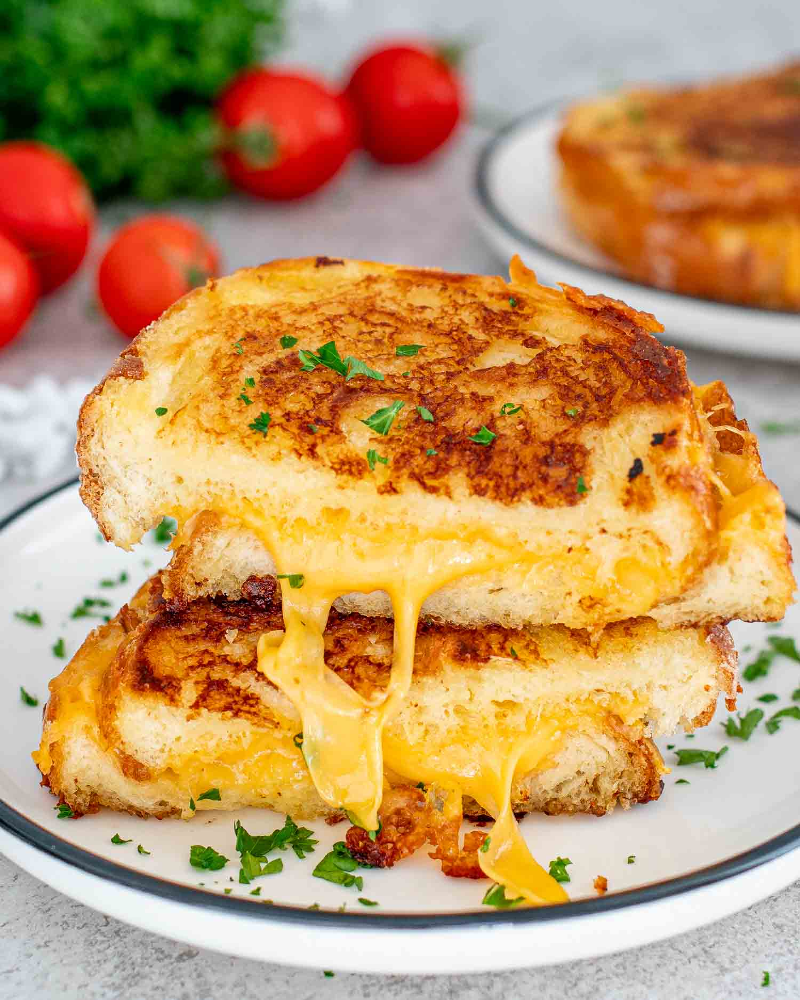

Grilled Cheese Sandwhich
Go back Home

I know, I know. Who needs a recipe for grilled cheese? It’s not necessarily about a long list of fancy ingredients and
over-the-top fillings. Today, I have a really easy technique that I’ve been using since I can remember to make the BEST
grilled cheese sandwiches.
Whenever I make one of these sandwiches for someone, they always want seconds. These little changes in the way you
cook up this iconic recipe will make a huge difference in the end result. So, stay with me here! Give my method a
try and let me know what you think.
Ingredients You Will Need:
- Bread- You can use any type you like – white, whole wheat, sourdough, or even a gluten-free variety
for those with dietary restrictions.
- Mayonnaise- Any type you like best. You can even try out this homemade version!
- Cheese- It brings the gooey, melty goodness that’s essential in a grilled cheese. Feel free to experiment with
other cheeses like mozzarella for stretchiness, Swiss for a nutty flavor, or a dairy-free cheese if you’re vegan.
Steps:
- Spread the Mayonnaise First things first, grab your bread slices and slather them with mayonnaise. Go
generous with it, but no need to overdo it.
- Time For Cheese Now, heat up your skillet over medium heat. Take one of those mayo-coated slices and
place it mayo side down in the skillet. Then comes the fun part – sprinkle on that cheese. Half a cup should do the
trick. And hey, it’s okay if some cheese strays onto the pan.
- Grill to Perfection Grab your second slice of bread, mayo side up this time, and gently lay it on top
of the cheese. Let your sandwich cook for about 4-5 minutes. Keep an eye on it – we’re aiming for golden brown, not
charred black. If your skillet is too hot, don’t hesitate to dial it back a bit.
-
The FlipOnce the bottom is perfectly golden, it’s time to turn it over. Give the other side about 3-4
minutes to get that same delicious, golden color. This is where the cheese gets all melty and irresistible. Your grilled
cheese is ready!